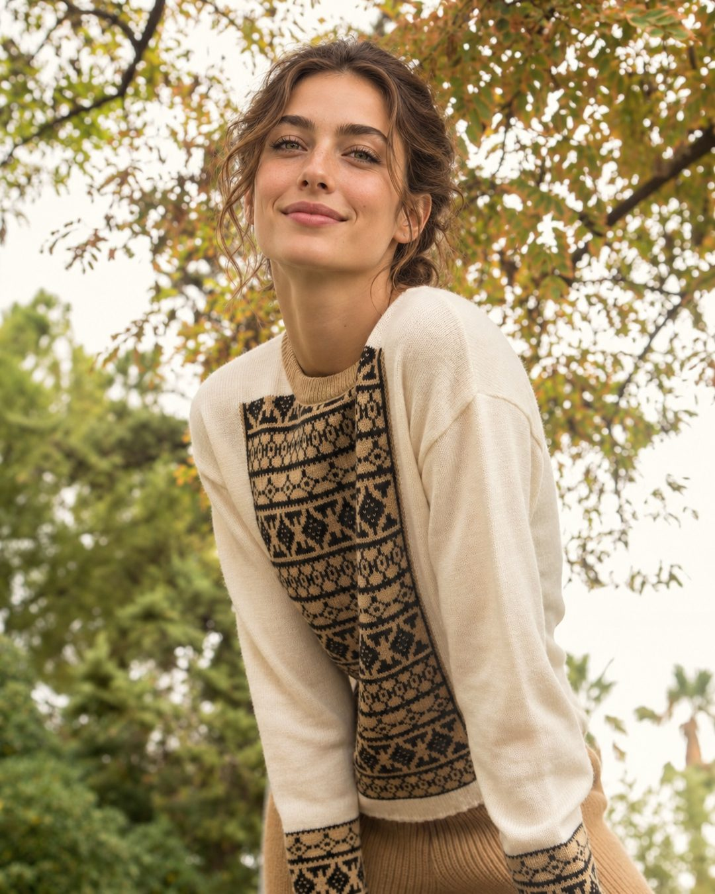
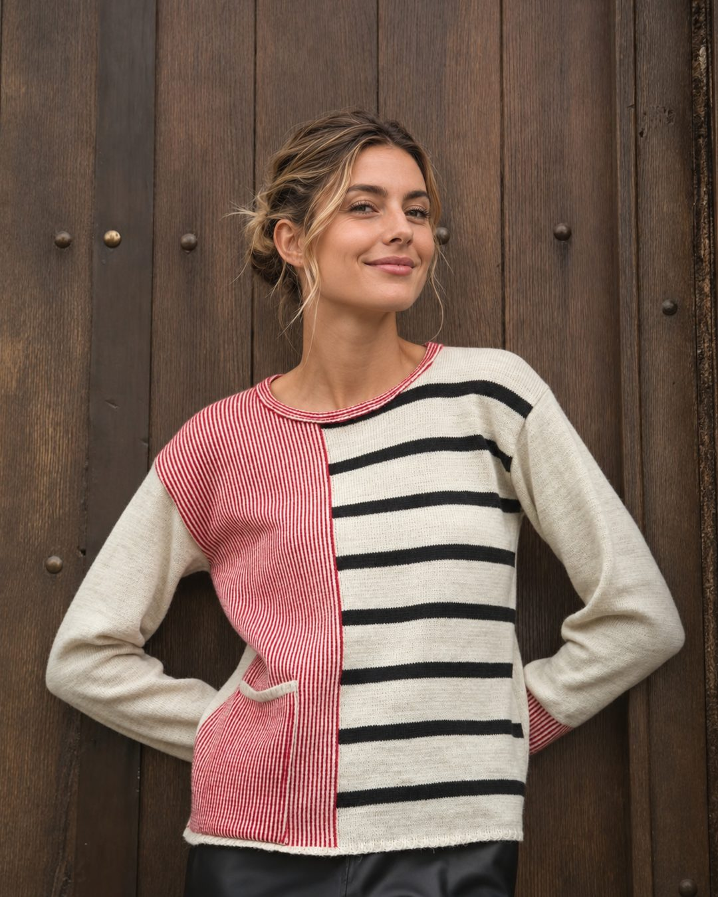
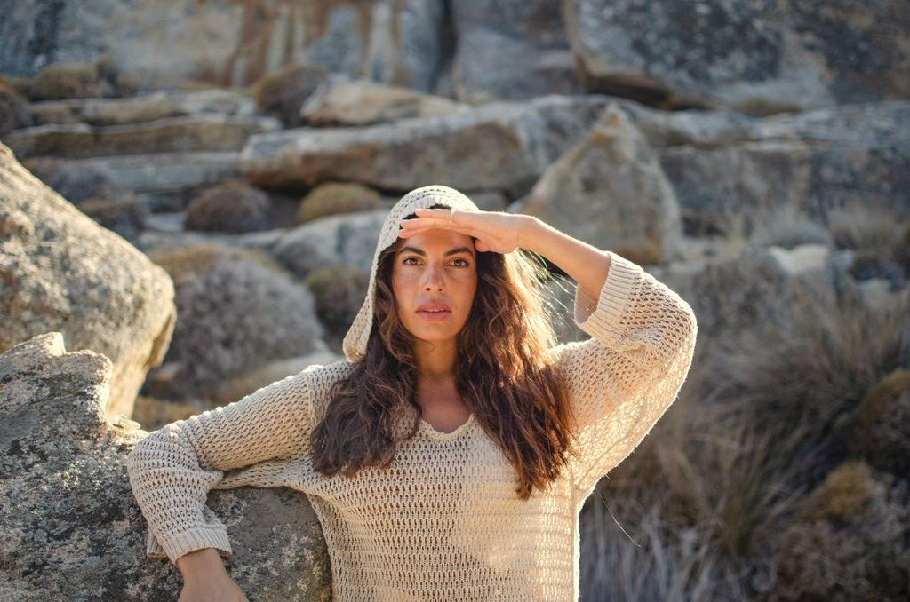
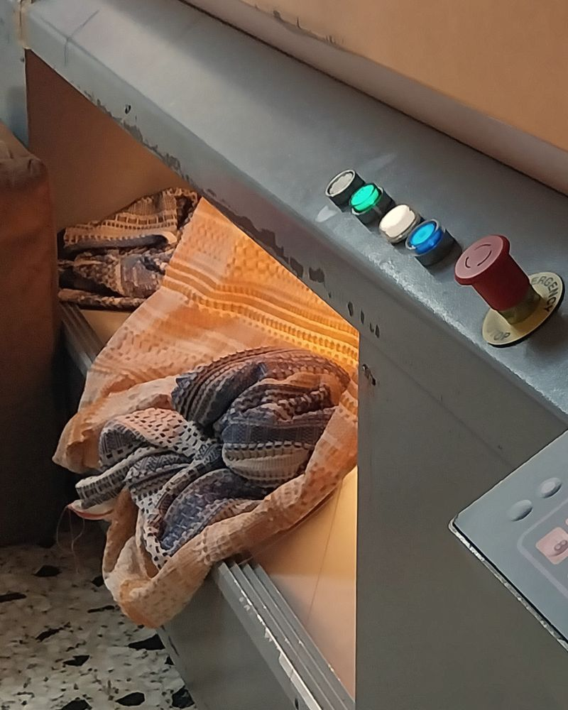

Private-label knitwear manufacturing · since 1982
From yarnto your garment.
Knitwear manufacturing for fashion businesses and professionals. You bring the design, we turn it into production, in our workshop in Nea Ionia, Athens, since 1982.


- 1982the year we were founded
- 44years in knitwear
- Samplefor your approval before production
- Nea Ioniaworkshop and showroom
Manufacturing services
Every stage of your production.
From knitting to packing. Tell us what your design needs and we will suggest how production should go.
Knitting
We knit the garment panels on our machines, following your design and tech sheet.
02Cutting
Precise cutting of the knitted panels, so the garment keeps the shape and proportions of the design.
03Sewing
Sewing is what we are known for: clean seams and a finish that hold the garment’s shape.
04Pressing & finishing
Pressing and a final check, so every piece leaves ready.
05Packing
Folding and packing the garments, ready for shipping.
06Sampling
Before production we make a sample, so you can approve the yarn, fit and details.
The process
Six steps, one continuous thread.
From the first sketch to the packed garment, you always know where your production stands. See it in detail
Design
You bring us a sketch, a tech sheet or a reference garment.
Yarn
Together we agree on composition, count and colour.
Sample
We make a sample for review and approval.
Knitting
Production starts on our knitting machines.
Sewing
Cutting, sewing, pressing and quality control.
Delivery
Packed and ready to ship.
Our work
Designs that take shape.
Knitwear knitted and sewn in our workshop. Stripes, jacquard, herringbone, pointelle: a glimpse of the range of our production.




Every piece starts from a design. Have something similar in mind?
Yarns & textures
Yarn, gauge, texture.
The result starts with the yarn. We agree on composition, count and colour together, and check the texture on the sample before production. Yarns and materials

Textured knit
Horizontal relief that gives the garment body and movement.

Raglan seam
Where the sleeve meets the body, the care in the sewing shows.

Pointelle knit
An open, lightweight knit for summer knitwear.


The knitting machines in our Nea Ionia workshop. Right: knitting in progress.
The workshop
One family, one workshop, since 1982.
In Nea Ionia, our knitting machines work right next to the hands that sew and finish every piece.
Sewing is what we are known for.
Showroom
Our showroom is on the workshop premises. Contact us to arrange your visit.
Have a design?Let’s knit it.
Send us your sketch, tech sheet or a reference garment. We will reply with the options and a first quote.